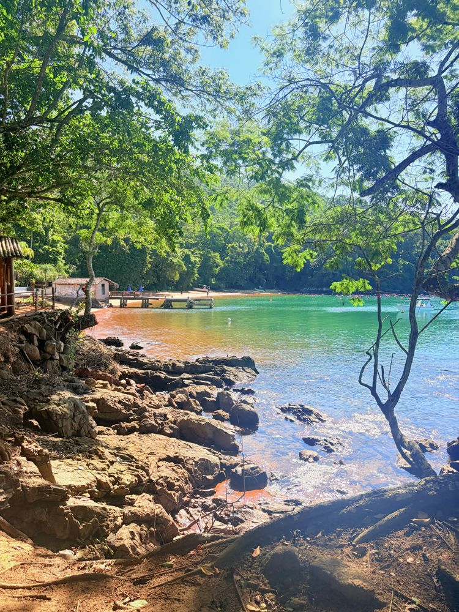
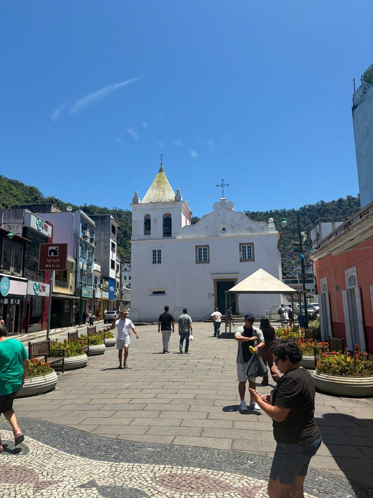
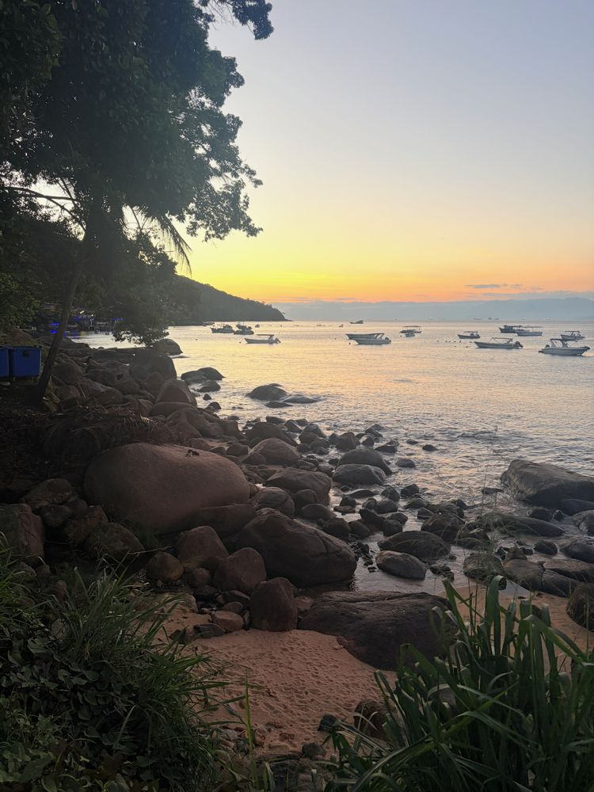

EXPERIÊNCIA RIO IA
Angra dos Reis
e Ilha Grande
Um dia inteiro de águas cristalinas, ilhas verdes e praias paradisíacas, a poucas horas do Rio.
Dia inteiroPasseio de barcoIlhas e praiasAlmoço
VALORA partir de R$ 250
Por pessoa, com transporte ida e volta do Rio, passeio de barco e almoço.
A experiência
Saída de barco
Rumo às ilhas saindo do cais, entre escunas e lanchas.

Águas cristalinas
Enseadas verdes e turquesa para nadar e tirar fotos.
Cachoeiras
Água doce no meio da Mata Atlântica.
Momentos reais dos nossos passeios
 Praias
PraiasPôr do sol
 Areia e mar
Areia e mar
Angra dos Reis
Fim de tardeBarcos na baía
 Ilhas de Angra
Ilhas de AngraCantinhos
Fotos e vídeos reais dos nossos passeios.
O que inclui
- Transporte ida e volta saindo do Rio
- Passeio de barco pelas ilhas de Angra
- Paradas para nadar em águas cristalinas
- Almoço
- Atendimento pelo WhatsApp do início ao fim
O que levar
- Roupa de banho, toalha e protetor solar
- Documento com foto
- Dinheiro para bebidas e extras
Bom saber
É um passeio de dia inteiro: saída cedo pela manhã e volta à noite. O roteiro de barco depende do tempo e do mar.
Como reservar
Reserva: confirmada com o pagamento de 100%, por Pix ou cartão (no cartão +5%). Confirmamos tudo pelo WhatsApp.
Reservar pelo WhatsApp